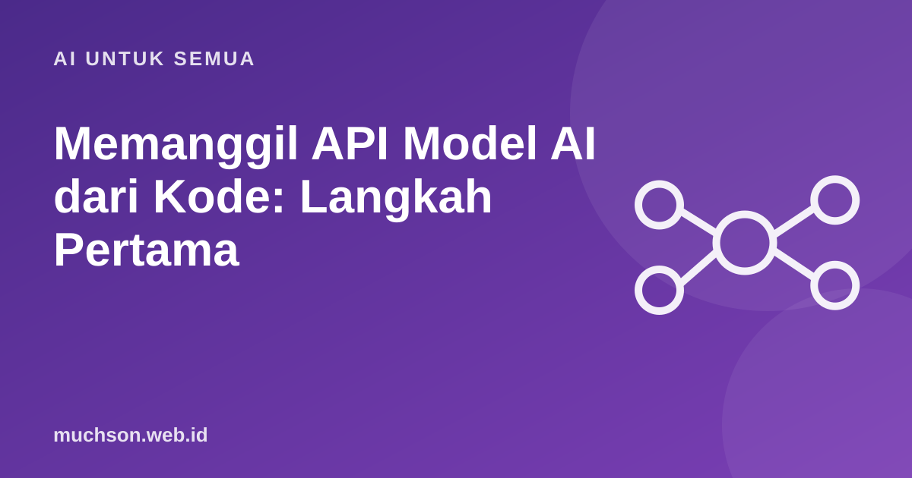

Beranda › Artikel › AI untuk Semua
AI untuk SemuaMemanggil API Model AI dari Kode: Langkah Pertama
Memakai chatbot di browser dan memanggil model AI dari aplikasi Anda sendiri adalah dua hal yang berbeda. Lewat API, Anda menentukan instruksi, format jawaban, data yang dikirim, dan apa yang terjadi dengan hasilnya. Inilah pintu masuk untuk membuat fitur AI di produk sendiri.

Bagian-bagian sebuah permintaan
| Bagian | Isi |
|---|---|
| model | Nama model yang dipakai. Cek daftar terbaru di dokumentasi penyedia. |
| system | Instruksi peran dan aturan yang berlaku sepanjang percakapan. |
| messages | Riwayat percakapan: bergantian user dan assistant. |
| max_tokens | Batas panjang jawaban. |
| temperature | Opsional: rendah lebih konsisten, tinggi lebih bervariasi. |
Contoh Python
# pip install anthropic
# simpan kunci di variabel lingkungan ANTHROPIC_API_KEY
import anthropic
client = anthropic.Anthropic()
respon = client.messages.create(
model="claude-sonnet-5-5", # ganti sesuai model yang tersedia untuk akun Anda
max_tokens=500,
system="Kamu asisten toko optik. Jawab singkat dalam bahasa Indonesia. "
"Jangan memberi diagnosis medis.",
messages=[
{"role": "user", "content": "Apa beda lensa indeks 1.56 dan 1.67?"}
],
)
print(respon.content[0].text)
print(respon.usage.input_tokens, respon.usage.output_tokens)Contoh JavaScript (Node.js)
// npm install @anthropic-ai/sdk
import Anthropic from '@anthropic-ai/sdk';
const client = new Anthropic(); // membaca ANTHROPIC_API_KEY
const respon = await client.messages.create({
model: 'claude-sonnet-5-5',
max_tokens: 500,
messages: [{ role: 'user', content: 'Buat 3 ide judul artikel tentang Flutter.' }],
});
console.log(respon.content[0].text);Penyedia lain (OpenAI, Google Gemini, dan model open source lewat layanan seperti OpenRouter) memakai pola yang sangat mirip: kirim daftar pesan, terima teks dan jumlah token.
Percakapan: model tidak mengingat apa pun
API bersifat stateless. Model tidak menyimpan percakapan sebelumnya; Anda yang mengirim ulang riwayat setiap kali.
riwayat = [
{"role": "user", "content": "Nama saya Ani."},
{"role": "assistant", "content": "Halo Ani!"},
{"role": "user", "content": "Siapa nama saya?"},
]
# kirim seluruh riwayat agar model bisa menjawab "Ani"Karena riwayat dikirim ulang, percakapan yang panjang makin mahal di setiap giliran. Ringkas atau potong riwayat lama bila tidak lagi relevan.
Streaming agar terasa cepat
with client.messages.stream(
model="claude-sonnet-5-5", max_tokens=800,
messages=[{"role": "user", "content": "Jelaskan rekursi untuk pemula."}],
) as stream:
for teks in stream.text_stream:
print(teks, end="", flush=True)Pengguna melihat jawaban muncul kata demi kata, bukan menunggu beberapa detik di layar kosong.
Aturan wajib sebelum ke produksi
Tanya jawab
Apakah memakai API berbayar?
Apakah data yang dikirim lewat API dipakai untuk melatih model?
Bisakah memanggil API langsung dari aplikasi Flutter?
Sumber dan bacaan lanjut
- Claude Platform Docs: overview
- Claude Docs: Streaming Messages
- Apa itu token dan context window (artikel terkait)